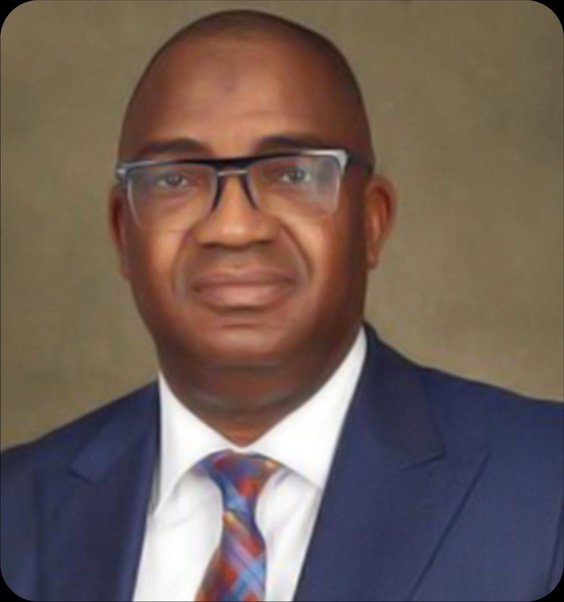

Home / About / Board
Board of Directors
Abubakar Jimoh

Leadership grounded in experience.
Abubakar Aribidesi Jimoh is the founder and Group Chief Executive Officer of TrustBanc Holdings Limited. He has over 25 years of experience in the banking industry and is a Fellow of the Chartered Institute of Bankers.
He holds degrees in Finance from the University of Lagos and has attended leading executive management programmes in strategic investment management, governance, and financial risk.